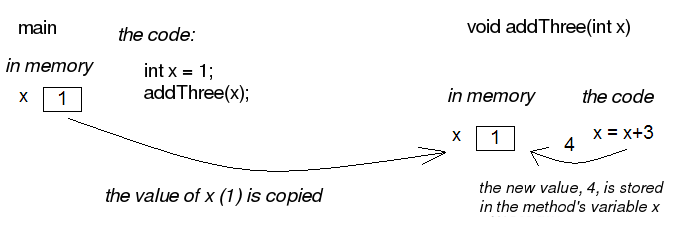
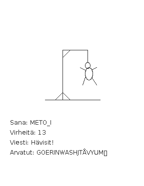

Methods and the copying of parameters
Let us focus on a couple of details concerning methods.
In section 15 there was an example, in which we tried to change the value of a main program variable inside a method.
public static void main(String[] args) {
int number = 1;
addThree();
System.out.println("Main program variable number holds the value: " + number);
}
public static void addThree() {
number = number + 3;
}
This program of ours does not work, because the method cannot access the main program variable
number.
That is because main program variables are not visible to the methods. And more generally: no method
variable is visible to other methods. Because the main program main is also a method, this
holds for the main program as well. The only way to give information to a method is to use
parameters.
Let us try to fix the above example by passing the main program variable number to the
method as a parameter.
public static void main(String[] args) {
int number = 1;
addThree(number);
System.out.println(number); // prints 1, the value did not change
}
public static addThree(int number) {
number = number + 3;
}
The program still does not work the way we want. The method parameters are different variables than
the ones introduced in the main program. In the previous example the method increments a variable with
the same name as the main program variable. The parameter has the same name, but is not the same as the
main program variable number.
When a parameter is given to a method, the value of the parameter is copied into a new
variable and that new variable is the one the method uses. In the example above the variable
number that was given to the method addThree as a parameter will be copied
and then the copy is actually handed out to the method to use. The method uses only a copy of the
variable from the main program, not the original variable. The main program variable
number stays unchanged.
We can imagine that the main program method main and the method addThree
both work in their own parts of the computer memory. In the picture below there is a "box"
for the value of the variable number of the main method. When the method is called, a new
"box" named number will be created and the main method variable
number's value will be copied into it. In this example the number is 1. Both variables
that are called number are separate, therefore when the method addThree
changes the value of its own variable called number it does not affect the variable
number in the main program.
The picture below will demonstrate what happens.

The method can still naturally pass information to the caller, that happens by using a return value
(i.e. using a return command to return a variable with a value). We can get the previous
example to work by changing the code a little bit:
public static void main(String[] args) {
int number = 1;
number = addThreeAndReturn(number);
System.out.println(number); // prints 4, because number has the method return value as its value
}
public static int addThreeAndReturn(int number) {
number = number + 3;
return number;
}
The method still uses the copy of the main program variable number. In the main program
we assign the variable number the method return value as a new value, so that we can get
the change to take effect in the main program. Note that the name of the method variable plays no role
here. The code works exactly the same regardless of the names. Here follows an example:
public static void main(String[] args) {
int number = 1;
number = addThreeAndReturn(number);
System.out.println(number);
}
public static int addThreeAndReturn(int incremented) {
incremented = incremented + 3;
return incremented;
}
We found out that the parameters in methods are different variables than the variables introduced in the method call. Only the parameter value gets copied from the caller to the method.
Unfortunately it is not that simple. If a method gets an ArrayList as a parameter, the
method sees the original list and all the changes the method makes will take effect everywhere.
public static void removeFirst(ArrayList<Integer> list) {
list.remove(0); // removes the number from index 0
}
ArrayList<Integer> numbers = new ArrayList<Integer>();
numbers.add(4);
numbers.add(3);
numbers.add(7);
numbers.add(3);
System.out.println(numbers); // prints [4,3,7,3]
removeFirst(numbers);
System.out.println(numbers); // prints [3,7,3]
Unlike a parameter of int type, a list will not be copied and therefore the method
makes changes to the original list given as a parameter.
The picture below will clarify the example. ArrayList does not live in an imagined
"box" like an int. The variable name in the example numbers is only
a reference that refers to the place where the ArrayList is. One way to visualize this is that
an ArrayList is connected with a wire. The name of the ArrayList is a
"wire", and the list itself is located "in the other end of the wire". When we give
the ArrayList to a method as a parameter we actually give the method a wire, and when the
method uses its parameter it finds the original list at the other end of it. Actually the main program
and the method do have separate wires, but both wires have the same original list at the end of them
and all the changes will be made directly to the original list. During and after this week we will find
out that many things in Java are "connected with a wire".

Note that again the parameter name inside the method can be anything. It does not need to be the
same as the name in the main program (or other method that calls it). In the example above the method
uses the name list but the method caller sees the same list with a different name,
numbers.
But why does the value of the parameter get copied and the original variable stay intact when the
parameter is of int type but the original list is given to the method when the parameter
is of ArrayList type? In Java only the values of primitive data
types (which are int, double, char,
boolean and a couple of others that we have not yet discussed) get copied to the method.
When the method parameters are of other types only the references are copied to the method. A
reference is like a "wire", therefore the method can access the list using it directly. The
variables that are not of primitive data types are of reference data types
and are "wired" just like the ArrayList in the previous example. The method is given to the
wire and the method can access the parameter directly.
Combining ArrayLists
Create the method public static void combine(ArrayList<Integer> first,
ArrayList<Integer> second) that inserts the items on the list called
second to the list called first. The order of the items can be
anything and the same item can appear on the list more than once. An example on using the
method:
ArrayList<Integer> list1= new ArrayList<Integer>();
ArrayList<Integer> list2= new ArrayList<Integer>();
list1.add(4);
list1.add(3);
list2.add(5);
list2.add(10);
list2.add(7);
combine(list1, list2);
System.out.println(list1); // prints [4, 3, 5, 10, 7]
System.out.println(list2); // prints [5, 10, 7]
We can use the method addAll provided by the ArrayList class to add one list to
another list. The list gets the other list, whose items are to be added, as a parameter.
Smart combining
Create the method smartCombine that works like the previous
combine method except that numbers can be on the list only once. So the method
adds a new number to the list only if the list does not already contain that number. You might
find the method contains from the ArrayList class useful. You can use that method
to check if a number is on the list.
Instructions on code-writing and problem solving
One of the leading software developers, Kent Beck, has said:
- "Any fool can write code that a computer can understand. Good programmers write code that humans can understand."
- "I'm not a great programmer, I'm just good programmer with great habits."
We are now, at the latest, taking the first steps towards that goal.
Well indented and "breathing" code
Let us take a look at a code that first adds numbers to a list and then prints the list items. After that all instances of a certain number are removed from the list and the list gets printed.
First we write the code badly and without indentations:
public static void main(String[] args) {
ArrayList<Integer> numbers = new ArrayList<Integer>();
numbers.add(4);
numbers.add(3);
numbers.add(7);
numbers.add(3);
System.out.println("The numbers in the beginning:");
for (int number : numbers) {
System.out.println(number);
}
while (numbers.contains(Integer.valueOf(3))) {
numbers.remove(Integer.valueOf(3));
}
System.out.println("The numbers after removal:");
for (int number : numbers) {
System.out.println(number);
}
Even though the unindented code works, it is unpleasant to read. Let us indent the code (you can get NetBeans to auto-indent your code by pressing alt+shift+f) and separate logical parts with line breaks:
public static void main(String[] args) {
ArrayList<Integer> numbers = new ArrayList<Integer>();
numbers.add(4);
numbers.add(3);
numbers.add(7);
numbers.add(3);
System.out.println("The numbers in the beginning:");
// here we print numbers
for (int number : numbers) {
System.out.println(number);
}
// checks if the list contains the number 3
while (numbers.contains(Integer.valueOf(3))) {
numbers.remove(Integer.valueOf(3)); // if yes, it is removed
}
// we use a while structure to get all the threes removed!
System.out.println("The numbers after removal:");
// here we print numbers
for (int number : numbers) {
System.out.println(number);
}
Now the code starts to make sense. For example, the printing and the number removal are two logical parts, therefore they are separated with line breaks. The code is airy and reading the code is much more pleasant.
There are even comments in the code to help the reader understand what happens where!
Getting rid of copy-paste with methods
The original sin of a programmer is to create copy-paste code, which means using the same code in multiple places by copy-pasting it around. In our example the printing of the list is done twice. The code that handles the printing part should be separated as its own method and then call the method from the main program:
public static void main(String[] args) {
ArrayList<Integer> numbers = new ArrayList<Integer>();
numbers.add(4);
numbers.add(3);
numbers.add(7);
numbers.add(3);
System.out.println("The numbers in the beginning:");
// here we print numbers
print(numbers);
while (numbers.contains(Integer.valueOf(3))) {
numbers.remove(Integer.valueOf(3));
}
System.out.println("The numbers after removal:");
// here we print numbers
print(numbers);
}
public static void print(ArrayList<Integer> numbers) {
for (int number : numbers) {
System.out.println( number );
}
}
Slicing separate tasks into methods with descriptive names
The code has become even more easy to read. A distinctively separate entity, the printing of the list is now a method that is easy to understand. By defining a new method the readability of the main program has improved. Pay attention to the descriptive name of the method: the name says exactly what the method does. Next we can remove the advising comments here we print numbers , because the method name speaks for itself.
There is still room for improvements in the program. The main program still looks a bit messy, since there is an "unaesthetic" code line that directly manipulates the list, in between the neat method calls. Let us turn also that unaesthetic piece of code into a method:
public static void main(String[] args) {
ArrayList<Integer> numbers = new ArrayList<Integer>();
numbers.add(4);
numbers.add(3);
numbers.add(7);
numbers.add(3);
System.out.println("The numbers in the beginning:");
print(numbers);
remove(numbers, 3);
System.out.println("The numbers after removal:");
print(numbers);
}
public static void print(ArrayList<Integer> numbers) {
for (int number : numbers) {
System.out.println( number );
}
}
public static void remove(ArrayList<Integer> numbers, int removed) {
while (numbers.contains(Integer.valueOf(removed))) {
numbers.remove(Integer.valueOf(removed));
}
}
In the example above we created a new descriptively named method out of a separate logical entity, i.e. removing all the instances of a certain number. The resulting main program is now very understandable - almost like natural language. Both methods are very simple and easy to understand as well.
Kent Beck might be proud of what we have accomplished. The code is easy to understand, easy to modify and does not include any copy-paste.
Object-oriented programming
Before we begin, here's a little intro to object-oriented programming.
In procedural programming - which is the way of programming we've been studying so far - a program is divided in to smaller parts, methods. A method works as a separate part of a program and it can be called from anywhere in the program. When a method is called, execution of the program moves to the beginning of the called method. After execution of the method is done, the program will continue from where the method was called.
In object oriented programming, just like in procedural programming, we attempt to divide a program into smaller parts. In object-oriented programming the small parts are objects. Each separate object has its own individual responsibility; an object contains a related group of information and functionality. Object-oriented programs consist of multiple objects which together define how the program works.
Object
We've used many of the ready-made objects in Java already. For example, ArrayLists
are objects. Each separate list consists of information related to it; that is, the state of the
object. Functionality is also contained in the list objects: the methods by which the state of the
object can be altered. As an example there's two ArrayList objects in the following piece of code,
cities and countries :
public static void main(String[] args) {
ArrayList<String> cities = new ArrayList<String>();
ArrayList<String> countries = new ArrayList<String>();
countries.add("Finland");
countries.add("Germany");
countries.add("Netherlands");
cities.add("Berliini");
cities.add("Nijmegen");
cities.add("Turku");
cities.add("Helsinki");
System.out.println("number of countries " + countries.size() );
System.out.println("number of cities " + cities.size() );
}
Both the countries object and the cities object live a life of their own.
The state of each is not related to the state of the other. For example, the state of the
countries object consists of the Strings "Finland", "Germany" and
"Netherlands" that are on the list, probably also the information of how many countries are
in the list.
When doing a method call related to an object (for example,
countries.add("Finland");), the name of the object whose method is being called
goes to the left side of the period and to the right side goes the name of the method itself. When
asking how many Strings the countries list has we will call countries.size(), so we are
calling the method size of the object countries. What the method returns
depends on the state of the object in question, other objects don't affect the execution of the
method in any way.
We've used the command new many times already. For example the creation of a list
(ArrayList) and the creation of a reader (Scanner) have happened with the
command new. The reason is that both of these are classes from which the object
is created. in Java, objects are always created with new, except in a few cases.
One of the cases where you don't always need to use new is in the construction of
Strings. The familiar way to create a String is actually an abbreviated way of using new.
A String can also be created with new just like any other object:
String text = "some text"; // abbreviated way of creating a String
String anotherText = new String("more text");
Cases in which Java's ready-made parts call new out of sight of the programmer also
exist.
Class
It is clear that all objects aren't similar to one another. For example, ArrayList
objects differ drastically from String objects. All ArrayLists have the same
methods code>add, contains, remove, size, ... and
respectively all String objects have the same methods (substring,
length, charAt, ...). Arraylist and String objects don't have the same
methods because they're different types of objects.
The type of a certain group of objects is called a class. ArrayList is
a class, so are String, Scanner, and so forth. Objects on the other hand are
instances of classes.
Objects of the same class all have the same methods and a similar state. For example, the state of
an ArrayList object consists of elements inserted to the list while the state of a
String object consists of a string of characters.
Class and its objects
Class defines what kind of objects it has:
- what methods the object has
- what the state of the object is, or in other words, what kind of attributes the object has
A class describes the "blueprint" of the objects that are made out of it.
Lets take an analogy from the world outside of computers: the blueprints of a house. The blueprints define how the building is to be built and in that way dictate the shape and size of it. The blueprints are the class, they define the general characteristics of the objects created out of that class:

Individual objects, the houses in our analogy, are made from that same blueprint. They are instances of the same class. The state of individual objects, the attributes, can vary (color of the walls, the building material of the roof, doors, windowsills, etc...). Here's one instance of a House object:

An object is always created from its class by calling the method - the constructor - that
creates the object with the command new. For example, a new instance is created from the
class Scanner by calling new Scanner(..):
Scanner reader = new Scanner(System.in);
Constructors take parameters the way any other method does.
Accounts
You get a ready-made class Account along with your exercise files. The object
of the class Account represents a bank account, which has a balance (meaning some
amount of money). The accounts are used like this:
Account bartosAccount = new Account("Barto's account",100.00);
Account bartosSwissAccount = new Account("Barto's account in Switzerland",1000000.00);
System.out.println("Initial state");
System.out.println(bartosAccount);
System.out.println(bartosSwissAccount);
bartosAccount.withdrawal(20);
System.out.println("Barto's account balance is now: "+bartosAccount.balance());
bartosSwissAccount.deposit(200);
System.out.println("Barto's Swiss account balance is now: "+bartosSwissAccount.balance());
System.out.println("Final state");
System.out.println(bartosAccount);
System.out.println(bartosSwissAccount);
Your first account
Note: there is a different exercise template for each of the sub-exercises. For this exercise use the template 072.1
Create a program that creates an account with the balance of 100.0, deposits 20.0 and prints the account. Note! do all the steps described in the exercise exactly in the described order!
Your first money transfer
Note: there is a different exercise template for each of the sub-exercises. For this exercise use the template 072.2
Create a program that:
- Creates an account named
"Matt's account"with the balance of 1000 - Creates an account named
"My account"with the balance of 0 - Withdraws 100.0 from Matt's account
- Deposits 100.0 to My account
- Prints both accounts
Money transfers
Note: there is a different exercise template for each of the sub-exercises. For this exercise use the template 072.3
In the above program you made a money transfer from one person to another. Let us next create a method that does the same!
Create the method public static void transfer(Account from, Account to, double
howMuch) in the given program body. The method transfers money from one account to
another. You do not need to check that the from account has enough balance.
After doing that make sure that your main method does the following:
- Create an account
"A"with the balance of 100.0 - Create an account
"B"with the balance of 0.0 - Create an account
"C"with the balance of 0.0 - Transfer 50.0 from account A to account B
- Transfer 25.0 from account B to account C
Defining your own class - object variables
A class is defined to serve some meaningful whole. Often a "meaningful whole" represents
something from the real world. If a computer program needs to handle personal data it could be sensible
to define a separate class Person which then holds methods and attributes related to an
individual.
Let us go ahead and assume that we have a project frame with an empty main program:
public class Main { public static void main(String[] args) { } }
We will create a new class in our project. In NetBeans this can be done in projects on the left, from the right click menu select new, java class. We'll name the class in the dialog that pops up.
Just like with variables and methods the name of the class should always be as descriptive as possible. Sometimes as a project progresses a class might transform into something different in order meet the programmer's needs. In situations like this it's possible to rename your class with ease (see the NetBeans guide).
Lets create a class named Person. The class will exist in its own
Person.java file. So since the main program is in its own file the program now consists of
two files total. At first the class will be empty:
public class Person { }
The class has to define what methods and attributes the objects created from the class will have. Let us decide that each person has a name and an age. It feels natural to represent the name as a String and the age as an integer. Let us add this to our schematics:
public class Person { private String name; private int age; }
Above we defined that all instances created from the Person class have a name and an
age. Defining the attributes happens a little like how it happens with normal variables. In this case
though there's the keyword private in front of them. This means that name
and age won't show outside of the object, but instead are hidden within it. Hiding
things within an object is called encapsulation.
Variables defined within a class are called object variables, object fields or object attributes. A beloved child has many names.
So, we've defined the schematics -- the class -- for the person object. All person objects have
the variables name and age. The 'state' of the objects is determined
by the values that have been set to its variables.
Defining your own class - constructor, or "formatting the state"
When an object is created its starting state is defined at the same time. Self-defined objects are
created for the most part in the same way as ready-made objects (ArrayLists for example)
are created. Objects are created with the new command. When creating an object it'd be
handy to be able to set the values of some of the variables of the object.
public static void main(String[] args) {
Person bob = new Person("Bob");
// ...
}
This can be achieved by defining the object creating method, the constructor. The
constructor for the Person class that creates a new Person object has been
defined in the following. In the constructor the person that is being created gets 0 as its age and its
name it gets from the parameter of the constructor.
public class Person { private String name; private int age; public Person(String initialName) { this.age = 0; this.name = initialName; } }
The constructor always has the same name as the class. In the code above, the class is
Person and the constructor is public Person(String initialName). The value
the constructor receives as a parameter is in parentheses after the name of the constructor. You can
imagine the constructor as a method that Java runs when an object is created with the command new
Person("Bob"); Whenever an object is created from a class, the constructor of that
class is called.
A few notes: within the constructor there's a command this.age = 0. With it we set
a value of this particular object; we set the internal variable age of "this" object. Another
command is this.name = initialName;, again we give the internal variable name the String
that is defined in the constructor. The variables age and name show in the
constructor and elsewhere in the object automatically. They are referred to with the this
prefix. Due to the private modifier the variables can't be seen from outside the
object.
One more thing: if the programmer doesn't create a constructor for the class, Java will automatically create a default one for it. A default constructor is a constructor that does nothing. So if you for some reason don't need a constructor you don't need to write one.
Class definition - methods
We already know how to create and initialize objects. However, objects are useless if they cannot do
anything, so objects should have methods. Let us add to Person class a method that prints
the object to screen:
public class Person {
private String name;
private int age;
public Person(String nameAtStart) {
this.age = 0;
this.name = nameAtStart;
}
public void printPerson() {
System.out.println(this.name + ", age " + this.age + " years");
}
}
As seen, the method is written within the class. The method name is prefixed with public
void since it is assumed that users of the object should be capable of using the method and the
method should not return anything. With objects the keyword static is not used in method
definitions. Next week we will clarify the reason behind that.
Inside the method printPerson there is a single line of code that uses the object
variables name and age. The prefix this is used to emphasize
that we are referring to the name and age of this object. All the object variables are visible
from all the methods of the object.
Let us create three persons and ask them to print themselves:
public class Main {
public static void main(String[] args) {
Person pekka = new Person("Pekka");
Person brian = new Person("Brian");
Person martin = new Person("Martin");
pekka.printPerson();
brian.printPerson();
martin.printPerson();
}
}
The output is:
Pekka, age 0 years Brian, age 0 years Martin, age 0 years
Product
Create a class Product that represents a product sold in a webshop. A product
has a price, amount and name.
A new class can be created as follows: Point at the project 073.Product in the
projects tab and click the right mouse button. Then select new and java
class. When a dialog opens, give the class the name Product.
The class should have:
- Constructor
public Product(String nameAtStart, double priceAtStart, int amountAtStart) - Method
public void printProduct()that prints a product in the following form:Banana, price 1.1, amount 13
More methods
Let us create a method that can be used to increase the age of a person by one:
public class Person {
// ...
public void becomeOlder() {
this.age++;; // same as this.age = this.age + 1;
}
}
As expected, the method is written inside the class Person. The method increases the
value of object variable age by one.
Let us call the method and see what happens:
public class Main {
public static void main(String[] args) {
Person pekka = new Person("Pekka");
Person andrew = new Person("Andrew");
pekka.printPerson();
andrew.printPerson();
System.out.println("");
pekka.becomeOlder();
pekka.becomeOlder();
pekka.printPerson();
andrew.printPerson();
}
}
Output:
Pekka, age 0 years Andrew, age 0 years Pekka, age 2 years Andrew, age 0 years
When born, both objects have age 0 due to the line this.age = 0; in the constructor.
Method becomeOlder of object pekka is called twice. As the output shows, this
causes the age of pekka to increase by two. It should be noted that when the method
becomeOlder is called to object pekka, the other object andrew
is not touched at all and he remains at age 0. So the state of an object is independent of the other
objects!
Also the object methods can return a value to the caller of the method. Let us define a method that can be used to ask for the age of a person:
public class Person {
// ...
public int getAge() {
return this.age;
}
}
Now the void in the method definition is replaced with int since the value
the method returns has the type integer. The following example demonstrates how the value returned by a
method can be used:
public class Main {
public static void main(String[] args) {
Person pekka = new Person("Pekka");
Person andrew = new Person("Andrew");
pekka.becomeOlder();
pekka.becomeOlder();
andrew.becomeOlder();
System.out.println( "Age of Pekka: "+pekka.getAge() );
System.out.println( "Age of Andrew: "+andrew.getAge() );
int total = pekka.getAge() + andrew.getAge();
System.out.println( "Pekka and Andrew total of "+total+ " years old" );
}
}
Output:
Age of Pekka: 2 Age of Andrew: 1 Pekka and Andrew total of 3 years old
Multiplier
Implement the class Multiplier that has:
- constructor
public Multiplier(int number). - method
public int multiply(int otherNumber)that returnsotherNumbermultiplied bynumber(i.e., the constructor parameter).
Example of the usage:
Multiplier threeMultiplier = new Multiplier(3);
System.out.println("threeMultiplier.multiply(2): " + threeMultiplier.multiply(2));
Kertoja fourMultiplier = new Multiplier(4);
System.out.println("fourMultiplier.multiply(2): " + fourMultiplier.multiply(2));
System.out.println("threeMultiplier.multiply(1): " + threeMultiplier.multiply(1));
System.out.println("fourMultiplier.multiply(1): " + fourMultiplier.multiply(1));
Output
threeMultiplier.multiply(2): 6 fourMultiplier.multiply(2): 8 threeMultiplier.multiply(1): 3 fourMultiplier.multiply(1): 4
Decreasing counter
The starting point of this exercise is a partially implemented class
DecreasingCounter:
public class DecreasingCounter {
private int value; // object variable that remembers the value of the counter
public DecreasingCounter(int valueAtStart) {
this.value = valueAtStart;
}
public void printValue() {
System.out.println("value: " + this.value);
}
public void decrease() {
// write here the code that decrements the value of counter by one
}
// and here the rest of the methods
}
The counter can be used as follows:
public class Main {
public static void main(String[] args) {
DecreasingCounter counter = new DecreasingCounter(10);
counter.printValue();
counter.decrease();
counter.printValue();
counter.decrease();
counter.printValue();
}
}
Output should be:
value: 10 value: 9 value: 8
The constructor of DecreasingCounter gets as parameter the initial value of
counter. In the example the constructor parameter is 10 which is then set to the
object variable this.value. The value of the counter can be printed with method
printValue(). The method decrease() should decrease the value of
counter by one.
Implementing method decrease()
Implement the method decrease() so that when called, the object variable
this.value is decreased by one. When this is done, your program should work as the
example above.
Value remains positive
Change your implementation of the method decrease() so that the value of the
counter will not drop below zero. If the method is called when the value is zero, nothing
should happen:
public class Main {
public static void main(String[] args) {
DecreasingCounter counter = new DecreasingCounter(2);
counter.printValue();
counter.decrease();
counter.printValue();
counter.decrease();
counter.printValue();
counter.decrease();
counter.printValue();
}
}
Output should be:
value: 2 value: 1 value: 0 value: 0
Counter reset
Implement the method public void reset() that sets the value of the counter to
zero. Example of the usage:
public class Main {
public static void main(String[] args) {
DecreasingCounter counter = new DecreasingCounter(100);
counter.printValue();
counter.reset();
counter.printValue();
counter.decrease();
counter.printValue();
}
}
Output:
value: 100 value: 0 value: 0
Back to initial value
Implement the method public void setInitial(), that returns the counter to its
initial value:
public class Main {
public static void main(String[] args) {
DecreasingCounter counter = new DecreasingCounter(100);
counter.printValue();
counter.decrease();
counter.printValue();
counter.decrease();
counter.printValue();
counter.zero();
counter.printValue();
counter.setInitial();
counter.printValue();
}
}
Output:
value: 100 value: 99 value: 98 value: 0 value: 100
Hint: add to the class a new object variable that remembers the initial value of the counter
Menu
In this assignment we will implement a class Menu that holds information about
meals that are available in a cafeteria.
Our starting point is the following class skeleton:
import java.util.ArrayList;
public class Menu {
private ArrayList<String> meals;
public Menu() {
this.meals = new ArrayList<String>();
}
// Implement the methods here
}
Menu objects store the information on meals using an object variable of type ArrayList<String>
Adding a meal to menu
Implement the method public void addMeal(String meal) that adds a new meal to
the list this.meals of a Menu object. If the meal is already on the list, it
shoulf not be added.
Printing the menu
Implement the method public void printMeals(), that prints the meals on a menu.
As example the output after three additions could be:
Hamburger Fish'n'Chips Sauerkraut
Clearing a menu
Implement the method public void clearMenu() that clears a menu, so after
calling this method the menu should be empty. Class ArrayList has a method that is
useful here. Within your method body write meals. and see how NetBeans helps you
by showing the available methods.
The Person class grows
Let us get back to working on the Person class. The current version of the class looks
like this:
public class Person { private String name; private int age; public Person(String initialName) { this.age = 0; this.name = initialName; } public void printPerson() { System.out.println(this.name + ", age " + this.age + " years"); } public void becomeOlder() { this.age = this.age + 1; } }
Let us create a method for person, with which we can figure out if a person is an adult. The method
returns a boolean -- either true or false:
public class Person { // ... public boolean isAdult(){ if ( this.age < 18 ) { return false; } return true; } /* note that the method could also be written like this: public boolean isAdult(){ return this.age >= 18; } */ }
Lets test it:
public static void main(String[] args) {
Person bob = new Person("Bob");
Person andy = new Person("Andy");
int i = 0;
while ( i < 30 ) {
bob.becomeOlder();
i++;
}
andy.becomeOlder();
System.out.println("");
if ( andy.isAdult() ) {
System.out.print("adult: ");
andy.printPerson();
} else {
System.out.print("minor: ");
andy.printPerson();
}
if ( bob.isAdult() ) {
System.out.print("adult: ");
bob.printPerson();
} else {
System.out.print("minor: ");
bob.printPerson();
}
}
minor: Andy, age 1 years adult: bob, age 30 years
Let us tune up the solution a little further. Now a person can only be printed so that in addition to the name, the age also gets printed out. In some cases we might only want the name of the object. Let us tailor up a method for the purpose:
public class Person { // ... public String getName() { return this.name; } }
The method getName returns the object variable name to its caller. The
name of the method might seem a little odd (or not). In Java it is considered the 'correct' way
to name an object-variable-returning method in this manner; as getVariableName. Methods
like these are often called 'getters'.
Let us edit the main program to use the new 'getter':
public static void main(String[] args) {
Person bob = new Person("bob");
Person andy = new Person("andy");
int i = 0;
while ( i < 30 ) {
bob.becomeOlder();
i++;
}
andy.becomeOlder();
System.out.println("");
if ( andy.isAdult() ) {
System.out.println( andy.getName() + " is an adult" );
} else {
System.out.println( andy.getName() + " is a minor" );
}
if ( bob.isAdult() ) {
System.out.println( bob.getName() + " is an adult" );
} else {
System.out.println( bob.getName() + " is a minor" );
}
}
The print is starting to look pretty clean:
andy is a minor bob is an adult
toString
We've been partially guilty of a bad programming style; we've created a method with which
the object is printed, the printPerson one. The recommended way of doing this is by
defining a method that returns a "character string representation" of the object. In Java a
method returning a String representation is always called toString. Let us define this
method for person:
public class Person { // ... public String toString() { return this.name + ", age " + this.age + " years"; } }
The method toString works just like printPerson, but instead of printing
it returns the string representation, so the calls to the method can be used for printing at will.
The method is used in a slightly surprising way:
public static void main(String[] args) {
Person bob = new Person("Bob");
Person andy = new Person("Andy");
int i = 0;
while ( i < 30 ) {
bob.becomeOlder();
i++;
}
andy.becomeOlder();
System.out.println( andy ); // same as System.out.println( andy.toString() );
System.out.println( bob ); // same as System.out.println( bob.toString() );
}
The principle is that System.out.println-method requests the string representation of
an object and then prints it. The string representation a returning toString-method
doesn't have to be written, since Java adds it automatically. When the programmer writes:
System.out.println( andy );
Java completes the call during runtime to the format:
System.out.println( andy.toString() );
This means that an object gets asked for its string representation. The string representation the
object returns gets printed out normally with the System.out.println-command.
We can get rid of the obsolete printObject-method.
Lyyra-card
The University of Helsinki students use so-called Lyyra cards to pay for their meals in
student cafeterias. In this assignment we implement class LyyraCard that simulates
the Lyyra card.
Class skeleton
Start by adding to your project the class LyyraCard.
Then implement the LyyraCard a constructor that gets the starting balance of
the card as parameter. The card saves the balance in the object variable balance.
Implement also the toString method that returns a string of the form "The
card has X euros".
The skeleton of class LyyraCard looks like this:
public class LyyraCard {
private double balance;
public LyyraCard(double balanceAtStart) {
// write code here
}
public String toString() {
// write code here
}
}
The following main-program can be used to test the program:
public class Main {
public static void main(String[] args) {
LyyraCard card = new LyyraCard(50);
System.out.println(card);
}
}
The output should be:
The card has 50.0 euros
Paying with card
Implement the following methods to LyyraCard:
public void payEconomical() {
// write code here
}
public void payGourmet() {
// write code here
}
Method payEconomical should decrease the balance by 2.50 euros and method
payGourmet by 4.00 euros.
The following main program can be used to test the program:
public class Main {
public static void main(String[] args) {
LyyraCard card = new LyyraCard(50);
System.out.println(card);
card.payEconomical();
System.out.println(card);
card.payGourmet();
card.payEconomical();
System.out.println(card);
}
}
The output should be:
The card has 50.0 euros The card has 47.5 euros The card has 41.0 euros
Balance nonnegative
Change methods payEconomical and payGourmet so that if there is
not enought money, the balance does not change.
The following main program can be used to test the program:
public class Main {
public static void main(String[] args) {
LyyraCard card = new LyyraCard(5);
System.out.println(card);
card.payGourmet();
System.out.println(card);
card.payGourmet();
System.out.println(card);
}
}
The output should be:
The card has 5.0 euros The card has 1.0 euros The card has 1.0 euros
Above, the second call payGourmet does not alter the balance since there is not
enough money on the card for a gourmet lunch.
Loading money to card
Add the LyyraCard the following method:
public void loadMoney(double amount) {
// write code here
}
The method should increase the balance of the card by the given amount. However, the maximum balance on a card is 150 euros. In case the balance after loading money would be more than that, it should be truncated to 150 euros.
The following main program can be used to test the program:
public class Main {
public static void main(String[] args) {
LyyraCard card = new LyyraCard(10);
System.out.println(card);
card.loadMoney(15);
System.out.println(card);
card.loadMoney(10);
System.out.println(card);
card.loadMoney(200);
System.out.println(card);
}
}
The output should be:
The card has 10.0 euros The card has 25.0 euros The card has 35.0 euros The card has 150.0 euros
Loading a negative amount
Change the method loadMoney so that the balance of the card does not change if
the amount to load is negative.
The following main program can be used to test the program:
public class Main {
public static void main(String[] args) {
LyyraCard card = new LyyraCard(10);
System.out.println(card);
card.loadMoney(-15);
System.out.println(card);
}
}
The output should be:
The card has 10.0 euros The card has 10.0 euros
Multiple cards
Write a main method that does the following:
- Create LyyraCard for Pekka with initial balance of 20 euros
- Create LyyraCard for Brian with initial balance of 30 euros
- Pekka buys gourmet lunch
- Brian buys economical lunch
- cards are printed (both to their own row, starting with the name of the card owner)
- Pekka loads 20 euros
- Brian buys gourmet lunch
- cards are printed (both to their own row, starting with the name of the card owner)
- Pekka buys economical lunch
- Pekka buys economical lunch
- Brian loads 50 euros
- cards are printed (both to their own row, starting with the name of the card owner)
The main skeleton is as follows:
public class Main {
public static void main(String[] args) {
LyyraCard cardPekka = new LyyraCard(20);
LyyraCard cardBrian = new LyyraCard(30);
// write code here
}
}
The output should be:
Pekka: The card has 16.0 euros Brian: The card has 27.5 euros Pekka: The card has 36.0 euros Brian: The card has 23.5 euros Pekka: The card has 31.0 euros Brian: The card has 73.5 euros
More methods
Let us continue with the class Person. We would be interested in knowing the body mass index of a person. To calculate that
information we need to know their height and weight. We add for both the height and the weight object
variables and methods that can be used to assign the variables a value. After those are in place, we
can add also the method that calculates the body mass index. The class after the changes (only the
parts affected by the change shown):
public class Person {
private String name;
private int age;
private int weight;
private int height;
public Person(String initialName) {
this.age = 0;
this.name = initialName;
this.weight = 0;
this.height = 0;
}
public void setHeight(int newHeight) {
this.height = newHeight;
}
public void setWeight(int newWeight) {
this.weight = newWeight;
}
public double bodyMassIndex(){
double heightDividedByZero = this.height / 100.0;
return this.weight / ( heightDividedByZero * heightDividedByZero );
}
// ...
}
We added object variables height and weight and methods
setHeight and setWeight that can be used to give values to the variables. In
naming the methods we follow the Java convention to call a method that just sets a new value to a
variable setVariableName, this type of methods are usually called setter
methods.
The new methods in use:
public static void main(String[] args) {
Person matti = new Henkilo("Matti");
Person john = new Henkilo("John");
matti.setHeight(180);
matti.setWeight(86);
john.setHeight(175);
john.setWeight(64);
System.out.println( matti.getName() + ", body mass index: " + matti.bodyMassIndex() );
System.out.println( john.getName() + ", body mass index: " + john.bodyMassIndex() );
The output:
Matti, body mass index: on 26.54320987654321 John, body mass index: on 20.897959183673468
Object variable and parameter with identical name
Above, the method setHeight assigns the objec variable height the value of
the parameter newHeight:
public void setHeight(int newHeight) {
this.height = newHeight;
}
The parameter could also be named identically with the object variable:
public void setHeight(int height) {
this.height = height;
}
Now the name height menans the parameter height and the identically named
object variable is referred to as this.height. The following would not work since the
object variable height is not referred to at all in the code:
public void setHeight(int height) {
// DOES NOT WORK!
height = height;
// this just assigns the value of the parameter to the parameter itself
}
Contolling the number of decimals when printing a float
The number of decimals in the last output was far too high, two decimals would be enough. One
technique to control how a float number is printed is to use the command
String.format.
If value is float, the command String.value( "%.2f", value )
returns a string where the value is rounded to contain 2 decimals. The number between dot and f defines
the amount of decimals shown.
So after changing the code to the following:
System.out.println( matti.getName() + ", body mass index: " + String.format( "%.2f", matti.bodyMassIndex() ) );
System.out.println( john.getName() + ", body mass index: " + String.format( "%.2f", john.bodyMassIndex() ) );
The output is:
Matti, body mass index: 26,54 John, body mass index: 20,90
Method String.format is perhaps not the most flexible way that Java provides for
formatting float values but it is simple to use and suits our purposes well.
Clock using a counter
We start by implementing a class BoundedCounter and then use counter objects to
implement a clock.
BoundedCounter
Implement class BoundedCounter with the following functionality:
- counter has an object variable that remembers the value of the counter. The value is within the range 0..upperBound
- At the start the value is 0.
- The upper bound of the value is defined by the constructor parameter
- The method
nextincrements the value of the counter. If the value would be more that the upper limit, it wraps around and becomes zero. - Method
toStringreturns a string representation of the counter value.
The skeleton of the class is the following:
public class BoundedCounter {
private int value;
private int upperLimit;
public BoundedCounter(int upperLimit) {
// write code here
}
public void next() {
// write code here
}
public String toString() {
// write code here
}
}
Note: you can't return an integer value directly in method toString since the
method should return a string. Integer variable value can be turned into a string
by prefixing it with an empty string: "" + value.
A main program that uses the counter:
public class Main {
public static void main(String[] args) {
BoundedCounter counter = new BoundedCounter(4);
System.out.println("Value at start: " + counter );
int i = 0;
while ( i < 10) {
counter.next();
System.out.println("Value: " + counter );
i++;
}
}
}
In the constructor a upper limit of 4 is given to the new counter object, so the value of
the counter should be within the range 0...4. Note how the method next increases
the value until it hits the upper limit and becomes zero again:
Value at start: 0 Value: 1 Value: 2 Value: 3 Value: 4 Value: 0 Value: 1 Value: 2 Value: 3 Value: 4 Value: 0
Printing the initial zero
Imrove toString so that if the value of the counter is less than 10, it
prefixes the value with 0. So if the value of the counter is e.g. 3, toString should produce
"03". If the value is at least 10, e.g. 12, the returned string would be
"12".
A main program that demonstrates the desired functionality of the improved toString.
public class Main {
public static void main(String[] args) {
BoundedCounter counter = new BoundedCounter(14);
System.out.println("Value at start: " + counter );
int i = 0;
while ( i < 16){
counter.next();
System.out.println("value: " + counter );
i++;
}
}
}
value at start: 00 value: 01 value: 02 value: 03 value: 04 value: 05 value: 06 value: 07 value: 08 value: 09 value: 10 value: 11 value: 12 value: 13 value: 14 value: 00 value: 01
The first version of the clock
With two counter objects we can build a simple clock. Hours can be represented by a counter with upper bound 23 and minutes by a counter with upper bound 59. As we all know, when minutes wrap around from 59 to 0, hours advance by one.
First you should implement method getValue to counter class:
public int getValue() {
// write here code that returns the value
}
Then implement the clock in your main method in the following style:
public class Main {
public static void main(String[] args) {
BoundedCounter minutes = new BoundedCounter(59);
BoundedCounter hours = new BoundedCounter(23);
int i = 0;
while ( i < 121 ) {
System.out.println( hours + ":" + minutes); // the current time printed
// advance minutes
// if minutes become zero, advance hours
i++;
}
}
}
The output should be:
00:00 00:01 ... 00:59 01:00 01:01 01:02 ... 01:59 02:00
The second version of the clock
Firstly implement the method setValue to class BoundedCounter. The
method should set the value of the parameter to the counter unless the parameter is less that
zero or larger than the upper bound. In those cases, the method does not have any effect.
Then add a seconds counter to your clock. The clock should now be like the following:
public class Main {
public static void main(String[] args) {
Scanner lukija = new Scanner(System.in);
BoundedCounter seconds = new BoundedCounter(59);
BoundedCounter minutes = new BoundedCounter(59);
BoundedCounter hours = new BoundedCounter(23);
System.out.print("seconds: ");
int s = // ask the initial value of seconds from the user
System.out.print("minutes: ");
int m = // ask the initial value of minutes from the user
System.out.print("hours: ");
int h = // ask the initial value of hours from the user
seconds.setValue(s);
minutes.setValue(m);
hours.setValue(h);
int i = 0;
while ( i < 121 ) {
// like in previous but seconds taken into account
i++;
}
}
}
Ensure that all works as expected when starting e.g. with time23:59:50.
Bonus: eternal clock (exercise not assessed with TMC!)
Before you start, submit the exercise for assesment.
Change your main as follows:
public class Main {
public static void main(String[] args) throws Exception {
BoundedCounter seconds = new BoundedCounter(59);
BoundedCounter minutes = new BoundedCounter(59);
BoundedCounter hours = new BoundedCounter(23);
seconds.setValue(50);
minutes.setValue(59);
hours.setValue(23);
while ( true ) {
System.out.println( hours + ":" + minutes + ":" + seconds );
Thread.sleep(1000);
// put here the logic to advance your clock by one second
}
}
}
Now the clock goes on forever and the value is updated as it should be, once in a second. A
second is waited with the command Thread.sleep(1000); The parameter in the command
is the time to sleep in milliseconds. In order to use the sleep command, you should do an
addition to the definition of main: public static void main(String[] args) throws
Exception {
You can end the eternal clock by pressing the red box in the NetBeans console (i,e, the area in NB where the output of programs gets printed).
Important notes regarding the use of objects. Make sure to read these.
Object oriented programming is mostly about turning concepts into their own entities, or in other
words forming abstractions. One might think that it's pointless to create an object that only holds
one number in it, and that the same could be achieved with simple int variables. This is
not the case. If a clock consists of just 3 int variables that are then increased, the program loses
some human readability. It becomes more difficult to "see" what the program is about. Earlier
in the material we mentioned the advice of the renown programmer Kent Beck: "Any fool can
write code that a computer can understand. Good programmers write code that humans can
understand", since the hand of a clock is actually its own clearly definable concept, it is a
good idea to create it its own class - BoundedCounter - for the sake of human
readability.
Turning a concept into a class of its own is a good idea for a lot of reasons. Firstly some details
(ie. when the counter makes a full round) can be hidden inside the class (abstracted). Instead
of writing an if-clause and an assignment operation, it is enough that the user of the counter calls
the descriptively named method next(). In addition to clocks the created counter might be
good for being used as a building block for other projects too, so a class made from a clear concept
can be very versatile. Another huge advantage we gain by writing code this way is that when the details
of the mechanics are hidden they can be changed if need be.
We established that a clock contains three hands, it consists of three concepts. Actually the clock itself is a concept too and next week we'll make the class Clock, so we can create distinct Clock objects. Clock will be an object which in the functionality is based on "simpler" objects, the hands. This is the grand idea of object oriented programming: a program is built out of small, clearly defined co-operating objects.
Now we'll take some careful first steps in the object world. Towards the end of the course, objects will start to come to you naturally and the idea of programs being built out of small, well defined, co-operating pieces - which at this point might feel incomprehensible - will become something you'll take for granted.
Calling other methods within an object
Objects can also call ins own methods. Let us assume we'd like to include body mass index in the
string representation of the person objects. Instead of calculating the body mass index in the toString
method, a better idea is to call the method bodyMassInded from the toString
method:
public String toString() {
return this.name + ", age " + this.age + " years, my body mass index is " + this.bodyMassIndex();
}
As can be seen, an object can call its own method by prefixing the method name with
this and dot. The this is not necessary, so also the following works:
public String toString() {
return this.name + ", age " + this.age + " years, my body mass index is " + bodyMassIndex();
}
Now it is time to continue practising programming.
NumberStatistics
Amount of numbers
Implement class NumberStatistics with the following methods:
addNumberadds a new number to the statisticsamountOfnumberstells us how many numbers have been added to the statistics
Note that the class should not store the added numbers. At this stage it is enough
to remember how many added numbers there are, i.e. how many times the method
addNumber has been called.
The class skeleton
public class NumberStatistics {
private int amountOfNumbers;
public NumberStatistics() {
// initialize here the object variable amountOfNumbers
}
public void addNumber(int number) {
// code here
}
public int amountOfnumbers() {
// code here
}
}
A usage example:
public class Main {
public static void main(String[] args) {
NumberStatistics stats = new NumberStatistics();
stats.addnumber(3);
stats.addnumber(5);
stats.addnumber(1);
stats.addnumber(2);
System.out.println("Amount: " + stats.amountOfNumbers());
}
}
The output should be:
Amount: 4
sum and average
Add the following methods to the class:
sumreturns the sum of the added numbers (if no numbers added, the sum is 0)averagereturns the average of the added numbers (if no numbers added, the average is 0)
The class skeleton now:
public class NumberStatistics {
private int amountOfNumbers;
private int sum;
public NumberStatistics() {
// initialize here the object variable amountOfNumbers
}
public void addnumber(int luku) {
// code here
}
public int amountOfNumbers() {
// code here
}
public int sum() {
// code here
}
public double average() {
// code here
}
}
A usage example:
public class Main {
public static void main(String[] args) {
NumberStatistics stats = new NumberStatistics();
stats.addnumber(3);
stats.addnumber(5);
stats.addnumber(1);
stats.addnumber(2);
System.out.println("Amount: " + stats.amountOfNumbers());
System.out.println("sum: " + stats.sum());
System.out.println("average: " + stats.average());
}
}
The output should be:
Amount: 4 sum: 11 average: 2.75
Asking for the numbers from the user
Create a program that asks the user to input numbers of the type integer. When the user gives -1, the program stops and prints the sum of the given numbers (excluding the -1).
Note: you should not make any changes to class NumberStatistics!
The program should use a NumberStatistics object to calculate the sum.
Type numbers: 4 2 5 4 -1 sum: 15
Many sums
Change your program so that it also calculates the sum of even and odd numbers in the user input (again -1 excluded).
NOTE: define in your program three NumberStatistics objects. The
first is used to track the sum of all the numbers. The second takes care of even numbers and
the third the odd numbers. Remember also that you should not make any changes to class
NumberStatistics!
The tests does not work if you do not create the objects in the order below!!
The program should work as follows:
Type numbers: 4 2 5 2 -1 sum: 13 sum of even: 8 sum of odd: 5
Randomness
When programming you may occasionally need to simulate random events. Situations such as the
unpredictability of weather, or surprising moves on the AI's part in a computer game can often be
simulated with random number generators, running on a computer. In Java there is a ready-made class
Random, which you can use in the following way:
import java.util.Random;
public class Randomizing {
public static void main(String[] args) {
Random randomizer = new Random(); // creates a random number generator
int i = 0;
while (i < 10) {
// Generates and prints out a new random number on each round of the loop
System.out.println(randomizer.nextInt(10));
i++;
}
}
}
In the code above you first create an instance of the class Random, with the keyword
new -- exactly as when creating objects implementing other classes. An object of type
Random has the method nextInt, to which you can give an integer value as a parameter. The
method returns a random integer within the range 0..(the integer given as parameter- 1).
The printout of this program could be as follows:
2 2 4 3 4 5 6 0 7 8
We will need floating point numbers for example when dealing with probability calculations. In
computing probabilities are usually calculated with figures within the range [0..1]. An object of the
class Random can return random floating point numbers with the method nextDouble.
Let's consider the following probabilities of weather conditions:
- Sleet with the probability 0.1 (10%)
- Snow with the probability 0.3 (30%)
- Sunny with the probability 0.6 (60%)
Using the estimates above, let's create a weather forecaster.
import java.util.ArrayList;
import java.util.Random;
public class WeatherForecaster {
private Random random;
public WeatherForecaster() {
this.random = new Random();
}
public String forecastWeather() {
double probability = this.random.nextDouble();
if (probability <= 0.1) {
return "Sleet";
} else if (probability <= 0.4) { // 0.1 + 0.3
return "Snow";
} else { // the rest, 1.0 - 0.4 = 0.6
return "Sunny";
}
}
public int forecastTemperature() {
return (int) ( 4 * this.random.nextGaussian() - 3 );
}
}
The method forecastTemperature is interesting in many ways. Within this method we are
calling the method this.random.nextGaussian(), just like any other time we've called a
method in the previous examples. Interestingly, this method of the class Random returns a figure in
normal distribution (if you have no interest in the different varieties of random figures,
that's okay!).
public int forecastTemperature() {
return (int) ( 4 * this.random.nextGaussian() - 3 );
}
In the expression above, just as interesting is the section (int). This part of the
expression changes the bracketed floating point number into an integer value. A corresponding method
transforms integer values into floating point numbers: (double) integer. This is called an
explicit type conversion.
Let's create a class with a main method that uses the class WeatherForecaster.
public class Program {
public static void main(String[] args) {
WeatherForecaster forecaster = new WeatherForecaster();
// Use a list to help you organise things
ArrayList<String> days = new ArrayList<String>();
Collections.addAll(days, "Mon", "Tue", "Wed", "Thu", "Fri", "Sat", "Sun");
System.out.println("Weather forecast for the next week:");
for(String day : days) {
String weatherForecast = forecaster.forecastWeather();
int temperatureForecast = forecaster.forecastTemperature();
System.out.println(day + ": " + weatherForecast + " " + temperatureForecast + " degrees.");
}
}
}
The printout from this program could be as follows:
Weather forecast for the next week: Mon: Snow 1 degrees. Tue: Snow 1 degrees. Wed: Sunny -2 degrees. Thu: Sunny 0 degrees. Fri: Snow -3 degrees. Sat: Snow -3 degrees. Sun: Sunny -5 degrees.
Rolling the dice
In the template is a class Dice, that has the following functionality:
- The constructor
Dice(int numberOfSides)creates a new dice object that has the amount of sides defined by the argument. - The method
rolltells the result of the roll (which depends on the number of its sides)
The frame of the program is as follows:
import java.util.Random;
public class Dice {
private Random random;
private int numberOfSides;
public Dice(){
random = new Random();
}
public int roll( {
// we'll get a random number in the range 1-numberOfSides<
}
}
Expand the class Dice so that the dice returns with each roll a random number
between 1...number of sides. Here's a main program that tests the dice:
public class Program {
public static void main(String[] args) {
Dice dice = new Dice(6);
int i = 0;
while ( i < 10 ) {
System.out.println( dice.roll() );
i++;
}
}
}
The output could look something like this:
1 6 3 5 3 3 2 2 6 1
Password randomizer
Your assignment is to expand the class PasswordRandomizer, which has the
following functionality:
- The constructor
PasswordRandomizercreates a new object, which uses the given password length. - The method
createPasswordreturns a new password which consists of symbols a-z and is of the length that is given as a parameter to the constructor
The frame of the class is as follows:
import java.util.Random;
public class PasswordRandomizer {
// Define the variables here
public PasswordRandomizer(int length) {
// Format the variable here
}
public String createPassword() {
// Write the code here which returns the new password
}
}
In the following is a program that uses a PasswordRandomizer object:
public class Program { public static void main(String[] args) { PasswordRandomizer randomizer = new PasswordRandomizer(13); System.out.println("Password: " + randomizer.createPassword()); System.out.println("Password: " + randomizer.createPassword()); System.out.println("Password: " + randomizer.createPassword()); System.out.println("Password: " + randomizer.createPassword()); } }
The output could look something like this:
Password: mcllsoompezvs Password: urcxboisknkme Password: dzaccatonjcqu Password: bpqmedlbqaopq
Tip1: this is how you turn the integer number into a character:
int number = 17; char symbol = "abcdefghijklmnopqrstuvxyz".charAt(number);
Tip2: The tip in assignment 58 might be useful in this one too.
Lottery
Your assignment is to expand the class LotteryNumbers, which draws the lottery
numbers of the week. The numbers are 1 to 39 and a total of 7 is drawn. The numbers of the week
consist of 7 different numbers between 1 and 39. The class has the following functionality:
- the constructor
LotteryNumberscreates a new LotteryNumbers object which contains the new drawn numbers - the method
numbersreturns the drawn numbers of this draw - the method
drawNumbersdraws new numbers - the method
containsNumberreveals if the number is among the drawn numbers
The frame of the class is as follows:
import java.util.ArrayList;
import java.util.Random;
public class LotteryNumbers {
private ArrayList<Integert> numbers;
public LotteryNumbers() {
// We'll format a list for the numbers
this.numbers = new ArrayList<Integert>();
// Draw numbers as LotteryNumbers is created
this.drawNumbers();
}
public ArrayList<Integert> numbers() {
return this.numbers;
}
public void drawNumbers() {
// Write the number drawing here using the method containsNumber()
}
public boolean containsNumber(int number) {
// Test here if the number is already among the drawn numbers
}
}
The following main program comes with the template:
import java.util.ArrayList;
public class Program {
public static void main(String[] args) {
LotteryNumbers lotteryNumbers = new LotteryNumbers();
ArrayList<Integert> lotteryNumbers = lotteryNumbers.numbers();
System.out.println("Lottery numbers:");
for (int number : lotteryNumbers) {
System.out.print(number + " ");
}
System.out.println("");
}
}
The program can print lines like these:
Lottery numbers: 3 5 10 14 15 27 37
Lottery numbers: 2 9 11 18 23 32 34
Note! a number can be in one set of numbers only once (per draw of course).
Game logic for Hangman
Your friend designed a Hangman game that looks like the following:

Your friend has programmed the user interface and also a skeleton for the game logic. Now she asks you to finish the remaining pieces of the game logic.
Amongst other stuff with TMC you get the following skeleton for the class
HangmanLogic
public class HangmanLogic {
private String word;
private String guessedLetters;
private int numberOfFaults;
public HangmanLogic(String sana) {
this.word = word.toUpperCase();
this.guessedLetters = "";
this.numberOfFaults = 0;
}
public int numberOfFaults() {
return this.numberOfFaults;
}
public String guessedLetters() {
return this.guessedLetters;
}
public int losingFaultAmount() {
return 12;
}
public void guessLetter(String letter) {
// program here the functionality for making a guess
// if the letter has already been guessed, nothing happens
// it the word does not contains the guessed letter, the number of faults increases
// the letter is added among the already guessed letters
}
public String hiddenWord() {
// program here the functionality for building the hidden word
// create the hidden word by iterating through this.word letter by letter
// if the letter in turn is within the guessed words, put it in the hidden word
// if the letter is not among the guessed ones, replace it with _ in the hidden word
// return the hidden word at the end
return "";
}
}
In this assignment you should only touch class HangmanLogic and implement
the functionality of the methods guessLetter(String letter) and
hiddenWord().
Testing the code
The tmc-project includes two classes that help you in the testing. The class
Main starts the graphical version of the game. The class TestProgram
can be used to test the class HangmanLogic.
Guessing a letter
Touch only the method guessLetter(String letter) in this assignment!
When a user guesses a letter, the user interface calls method guessLetter which
is supposed to take care of action related to guessing a letter. First, it should check if the
letter has already been guessed. In that case the method does not do anything.
The method increases the number of faults (this.numberOfFaults) if the word
(this.word) does not contain the guessed letter. The letter is added among the
already guessed letters (the object variable this.guessedLetters).
An example of how the method guessLetter should work:
HangmanLogic l = new HangmanLogic("kissa");
System.out.println("guessing: A, D, S, F, D");
l.guessLetter("A"); // correct
l.guessLetter("D"); // wrong
l.guessLetter("S"); // correct
l.guessLetter("F"); // wrong
l.guessLetter("D"); // This should not have any effect on the number of faults since D was already guessed
System.out.println("guessed letters: "+l.guessedLetters());
System.out.println("number of faults: "+l.numberOfFaults());
guessing: A, D, S, F, D guessed letters: ADSF number of faults: 2
Creating the hidden word
The Hangman user interface shows a hidden version of the word to the user. In the above
figure the hidden word is METO_I. All the letters that the user has already guessed are shown
in the hidden word but the rest of the letters are replaced with underscores. In this part of
the assignment you should complete the method hiddenWord of Hangman logic that
takes care of building the hidden word for the user interface.
Commands while, charAt and contains might be useful
here. Note that a single char can be made into a string as follows:
char c = 'a'; String aString = "" + c;
An example of how the method:
HangmanLogic l = new HangmanLogic("kissa");
System.out.println("word is: "+l.hiddenWord());
System.out.println("guessing: A, D, S, F, D");
l.guessLetter("A");
l.guessLetter("D");
l.guessLetter("S");
l.guessLetter("F");
l.guessLetter("D");
System.out.println("guessed letters: "+l.guessedLetters());
System.out.println("number of faults: "+l.numberOfFaults());
System.out.println("word now: "+l.hiddenWord());
word is: _____ guessing: A, D, S, F, D guessed letters: ADSF number of faults: 2 word now: __SSA
Now you can test the game by using class Main. You can change the guessed word
by changing the constructor parameter of the game logic:
HangmanLogic logic = new HangmanLogic("parameter");
HangmanUI game = new HangmanUI(logic);
game.start();
The game is played with the keyboard. You can end the game by pressing x in the upper left corner of the game window..